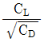
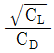
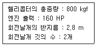
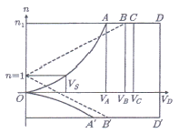
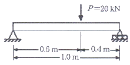
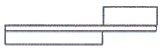
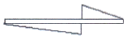
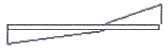
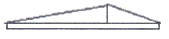

항공산업기사 (2019-03-03 기출문제)
1과목: 항공역학
1. 항공기의 세로 안정성(static longitudinal stability)을 좋게 하기 위한 방법으로 틀린 것은?
- 꼬리날개 면적을 크게 한다.
- 꼬리날개의 효율을 작게 한다.
- 날개를 무게 중심보다 높은 위치에 둔다.
- 무게 중심을 공기역학적 중심보다 전방에 위치시킨다.
(정답률: 84%)

2. 수평스핀과 수직스핀의 낙하속도와 회전각속도 크기를 옳게 나타낸 것은?
- 낙하속도 : 수평스핀 ＞수직스핀, 회전각속도 : 수평스핀 ＞수직스핀
- 낙하속도 : 수평스핀＜ 수직스핀, 회전각속도 : 수평스핀 ＜ 수직스핀
- 낙하속도 : 수평스핀 ＞수직스핀, 회전각속도 : 수평스핀＜ 수직스핀
- 낙하속도 : 수평스핀＜ 수직스핀, 회전각속도 : 수평스핀 ＞수직스핀
(정답률: 84%)
3. 항공기 이륙거리를 짧게 하기 위한 방법으로 옳은 것은?
- 정풍(head wind)을 받으면서 이륙한다.
- 항공기 무게를 증가시켜 양력을 높인다.
- 이륙 시 플랩이 항력증가의 요인이 되므로 플랩을 사용하지 않는다.
- 엔진의 가속력을 가능한 최소가 되도록 하여 효율을 높인다.
(정답률: 89%)
4. 비행자세 각속도가 조종간 변위를 일정하게 유지할 수 있는 정상 상태 트림비행(steady trrimmed flights)에 해당하지 않는 비행상태는?
- 루프 기동비행(loop maneuver)
- 하강각을 갖는 비정렬 선회비행(uncoordinated helical descent turn)
- 상승각을 갖는 정렬 선회비행(coordinated helical climb turn)
- 상승각 및 사이드 슬립각을 갖는 직선비행
(정답률: 69%)
5. 비행기 날개위에 생기는 난류의 발생 조건으로 가장 적합한 것은?
- 성층권을 비행할 때
- 레이놀즈수가 0 일 때
- 레이놀즈수가 아주 클 때
- 비행기 속도가 아주 느릴 때
(정답률: 75%)
6. 헬리콥터 속도-고도선도(velocity-height diagram) 와 관련된 설명으로 틀린 것은?
- 양력 불균형이 심회되는 높은 고도에서의 전진비행 시 비행가능영역이 제한된다.
- 엔진 고장 시 안전한 착륙을 보장하기 위한 비행가능영역을 표시한 것이다.
- 속도-고도선도는 항공기 중량, 비행고도 및 대기온도 등에 따라 달라진다.
- 속도-고도선도는 인증을 받은 후 비행교범의 성능차트로 명시되어야 한다.
(정답률: 47%)
7. 국제표준대기의 특성값으로 옳게 짝지어진 것은?
- 압력 = 29.92 mmHg
- 밀도 = 1.013 kg/m3
- 온도 = 288.15 K
- 음속 = 340.429 ft/s
(정답률: 66%)
8. 프로펠러 항공기의 경우 항속거리를 최대로 하기 위한 조건으로 옳은 것은?
- 양항비가 최소인 상태로 비행한다.
- 양항비가 최대인 상태로 비행한다.

가 최대인 상태로 비행한다.
가 최대인 상태로 비행한다.
(정답률: 88%)
9. 에어포일 코드 ‘NACA 0009'를 통해 알 수 있는 것은?
- 대칭단면의 날개이다.
- 초음속 날개 단면이다.
- 다이아몬드형 날개 단면이다.
- 단면에 캠버가 있는 날개이다.
(정답률: 86%)
10. 항공기의 승강키(elevator) 조작은 어떤 축에 대한 운동을 하는가?
- 가로축(lateral axis
- 수직축(vertical axis)
- 방향축(directional axis)
- 세로축(longitudinal axis)
(정답률: 80%)
11. 무게가 1000 lb 이고 날개면적이 100 ft2 인 프로 펠러 비행기가 고도 10000 ft에서 100 mph 의 속도, 받음각 3° 로 수평정상비행 할 때 필요마력은 약 몇 HP 인가? (단, 밀도 0.001756 slug/ft3, 양력 0.6, 항력 0.2 이다.)(문제 오류로 가답안 발표시 4번으로 발표되었지만 확정 답안 발표시 모두 정답 처리 되었습니다. 여기서는 4번을 누르면 정답 처리 됩니다.)
- 50.5
- 100
- 68.2
- 83.5
(정답률: 67%)
12. 대류권에서 고도가 상승함에 따라 공기의 밀도, 온도, 압력의 변화로 옳은 것은?
- 밀도, 압력, 온도 모두 증가한다.
- 밀도, 압력, 온도 모두 감소한다.
- 밀도, 온도는 감소하고 압력은 증가한다.
- 밀도는 증가하고 압력, 온도는 감소한다.
(정답률: 79%)
13. 회전원통 주위의 공기를 비회전운동을 시켜서 순환을 생기게 했다. 원통중심에서 1 m 되는 점에서의 속도가 10 m/s 였을 때 볼텍스(vortex)의 세기는 약 몇 m2/s 인가?
- 62.83
- 94.25
- 125.66
- 157.08
(정답률: 41%)
14. 다음 중 프로펠러 효율을 높이는 방법으로 가장 옳은 것은?
- 저속과 고속에서 모두 큰 깃각을 사용한다.
- 저속과 고속에서 모두 작은 깃각을 사용한다.
- 저속에서는 작은 깃각을 사용하고, 고속에서는 큰 깃각을 사용한다.
- 저속에서는 큰 깃각을 사용하고, 고속에서는 작은 깃각을 사용한다.
(정답률: 68%)
15. 다음 중 비행기의 안정성과 조종성에 관한 설명으로 가장 옳은 것은?
- 안정성과 조종성은 정비례한다.
- 정적 안정성이 증가하면 조종성도 증가된다.
- 비행기의 안정성을 최대로 키워야 조종성이 최대가 된다.
- 조종성과 안정성을 동시에 만족시킬 수 없다.
(정답률: 89%)
16. 유체의 점성을 고려한 마찰력에 대한 설명으로 옳은 것은?
- 마찰력은 유체의 속도에 반비례한다.
- 마찰력은 온도변화에 따라 그 값이 변한다.
- 유체의 마찰력은 이상유체에서만 고려된다.
- 마찰력은 유체의 종류에 관계없이 일정하다.
(정답률: 72%)
17. 프로펠러에 유입되는 합성속도의 방향이 프로펠러의 회전면이 이루는 각은?
- 받음각
- 유도각
- 유입각
- 깃각
(정답률: 58%)
18. 항공기에 쳐든각(dihedral angle)을 주는 주된 목적은?
- 익단 실속을 방지할 수 있다.
- 임계 마하수를 높일 수 있다.
- 가로 안정성을 높일 수 있다.
- 피칭 모멘트를 증가시킬 수 있다.
(정답률: 70%)
19. 항공기가 선회속도 20 m/s, 선회각 45° 상태에서 선회비행을 하는 경우 선회반경은 몇 m 인가?
- 20.4
- 40.8
- 57.7
- 80.5
(정답률: 61%)
20. 다음과 같은 [조건]에서 헬리콥터의 원판하중은 약 몇 kgf/m2 인가?

- 25.5
- 28.5
- 30.5
- 32.5
(정답률: 55%)
2과목: 항공기관
21. 가스터빈엔진에서 사용되는 윤활유 펌프에 대한 설명으로 틀린 것은?
- 배유펌프가 압력펌프보다 용량이 더 작다.
- 윤활유 펌프엔 베인형, 지로터형, 기어형이 사용된다.
- 베인형 펌프는 다른 형식에 비해 무게가 가볍고 두께가 얇아 기계적 강도가 약하다.
- 기어형 펌프는 기어 이와 펌프 내부 케이스 사이의 공간에 오일을 담아 회전시키는 원리로 작동한다.
(정답률: 74%)
22. 터보제트엔진과 비교한 터보팬엔진의 특징이 아닌 것은?
- 연료소비가 작다.
- 소음이 작다.
- 엔진정비가 쉽다.
- 배기속도가 작다.
(정답률: 70%)
23. 왕복엔진의 압축비가 너무 클 때 일어나는 현상이 아닌 것은?
- 후화
- 조기점화
- 디토네이션
- 과열현상과 출력의 감소
(정답률: 59%)
24. 왕복엔진의 피스톤 형식이 아닌 것은?
- 오목형(recessed type)
- 요철형(irregularly type)
- 볼록형(dome or convex type)
- 모서리 잘린 원뿔형(truncated cone type)
(정답률: 70%)
25. 열역학적 성질(propety)을 세기성질(intensive property)과 크기성질(extensive property)로 분류할 경우 크기성질에 해당되는 것은?
- 체적
- 온도
- 밀도
- 압력
(정답률: 77%)
26. 왕복엔진의 마그네토 브레이커 포인트(breaker point)가 고착되었다면 발생하는 현상은?
- 마그네토의 작동이 불가능하다.
- 엔진 시동 시 역화가 발생한다.
- 고속 회전 점화 시 과열현상이 발생한다.
- 스위치를 Off해도 엔진이 정지하지 않는다.
(정답률: 59%)
27. 왕복엔진에서 과도한 오일소모(excessive oil consumption)와 점화플러그의 파울링(fouling) 원인은?
- 더러워진 오일필터(oil filter) 때문
- 피스톤링(piston ring)의 마모 때문
- 오일이 소기펌프(scavenger pump)로 되돌아가기 때문
- 캠 허브 베어링(cam hub bearing)의 과도한 간격 때문
(정답률: 71%)
28. 점화플러그를 구성하는 주요부분이 아닌 것은?
- 전극
- 금속 쉘(shell)
- 보상 캠
- 세라믹 절연체
(정답률: 70%)
29. 오토사이클의 열효율에 대한 설명으로 틀린 것은?
- 압축비가 증가하면 열효율도 증가한다.
- 동작유체의 비열비가 증가하면 열효율도 증가한다.
- 압축비가 1 이라면 열효율은 무한대가 된다.
- 동작유체의 비열비가 1 이라면 열효율은 0 이 된다.
(정답률: 72%)
30. 가스터빈엔진에서 연소실 입구압력은 절대압력 80inHg, 연소실 출구압력은 절대압력 77 inHg 이라면 연소실 압력손실계수는 얼마인가?
- 0.0375
- 0.1375
- 0.2375
- 0.3375
(정답률: 51%)
31. 정속 프로펠러를 장착한 항공기가 순항 시 프로펠러 회전수를 2300 rpm 에 맞추고 출력을 1.2배 높이면 프로펠러 회전계가 지시하는 값은?
- 1800 rpm
- 2300 rpm
- 2700 rpm
- 4600 rpm
(정답률: 67%)
32. 가스터빈엔진 연료의 구비 조건이 아닌 것은?
- 인화점이 높아야 한다.
- 연료의 빙점이 높아야 한다.
- 연료의 증기압이 낮아야 한다.
- 대량생산이 가능하고 가격이 저렴해야 한다.
(정답률: 73%)
33. 항공기엔진에 사용하는 연료의 저발열량(LHV)에 대한 설명으로 옳은 것은?
- 연료 중 탄소만의 발열량을 말한다.
- 연소 효율이 가장 나쁠 때의 발열량이다.
- 연소가스 중 물(H2O)이 액상일 때 측정한 발열량이다.
- 연소가스 중 물(H2O)이 증기인 상태일 때 측정한 발열량이다.
(정답률: 56%)
34. 회전하는 프로펠러 깃(blade)의 선단(tip)이 앞으로 휘게(bend)될 때의 원인과 힘은?
- 토크에 의한 굽힘(torque-bending)
- 추력에 의한 굽힘(thrust-bending)
- 공력에 의한 비틀림(aerodynamic-twisting)
- 원심력에 의한 비틀림(centrifugal-twisting)
(정답률: 53%)
35. 가스터빈엔진에서 후기연소기(after burner)에 대한 설명으로 틀린 것은?(문제 오류로 가답안 발표시 4번으로 발표되었으나 확정답안 발표시 3, 4번이 정답 처리 되었습니다. 여기서는 4번을 누르면 정답 처리 됩니다.)
- 후기연소기는 연료소모가 증가된다.
- 후기연소기의 화염 유지기는 튜브형 그리드와 스포크형이 있다.
- 후기연소기를 장착하면 후기 연소 모드에서 약 100% 정도 추력 증가를 얻을 수 있다.
- 후기연소기는 약 5% 의 비교적 적은 비연소 배기가스와 연료가 섞여 점화된다.
(정답률: 78%)
36. 왕복엔진의 작동여부에 따른 흡입 매니폴드(intake manifold)의 압력계가 나타내는 압력으로 옳은 것은?
- 엔진정지 또는 작동 시 항상 대기압보다 높은 값을 나타낸다.
- 엔진정지 또는 작동 시 항상 대기압보다 낮은 값을 나타낸다.
- 엔진정지 시 대기압보다 낮은 값을, 엔진작동 시대기압보다 높은 값을 나타낸다.
- 엔진정지 시 대기압과 같은 값을, 엔진작동 시대기압보다 낮은 값을 나타낸다.
(정답률: 62%)
37. 제트엔진 부분에서 압력이 가장 높은 부위는?
- 터빈 출구
- 터빈 입구
- 압축기 입구
- 압축기 출구
(정답률: 72%)
38. 가스터빈엔진의 공기식 시동기를 작동시키는 공기공급 장치가 아닌 것은?
- APU
- GPU
- D.C power supply
- 시동이 완료된 다른 엔진의 압축공기
(정답률: 68%)
39. 가스터빈엔진에서 저압압축기의 압축비는 2:1, 고압압축기의 압축비는 10:1 일 때의 엔진 전체의 압력비는 얼마인가?
- 5:1
- 8:1
- 12:1
- 20:1
(정답률: 64%)
40. 압축비가 일정할 때 열효율이 가장 좋은 순서대로 나열된 것은?
- 정적사이클 〉정압사이클 〉합성사이클
- 정압사이클 〉합성사이클 〉정적사이클
- 정적사이클 〉합성사이클 〉정압사이클
- 정압사이클 〉정적사이클 〉합성사이클
(정답률: 64%)
3과목: 항공기체
41. 항공기 조종장치의 구성품에 대한 설명으로 틀린 것은?
- 풀리는 케이블의 방향을 바꿀 때 사용되며, 풀리의 베어링은 윤활이 필요 없다.
- 턴버클은 케이블의 장력조절에 사용되며, 턴버클배럴은 한쪽은 왼나사, 다른 쪽은 오른나사로 되어 있다.
- 압력 시일(seal)은 케이블이 압력 벌크헤드를 통과하지 않는 곳에 사용되며, 케이블의 움직임을 방해한다면 기밀은 하지 않는다.
- 페어리드는 케이블이 벌크헤드의 구멍이나 다른 금속이 지나는 곳에 사용되며, 페놀수지 또는 부드러운 금속 재료를 사용한다.
(정답률: 62%)
42. 항공기 기체의 구조를 1차 구조와 2차 구조로 분류할 때 그 기준에 대한 설명으로 옳은 것은?
- 강도비의 크기에 따라 분류한다.
- 허용하중의 크기에 따라 구분한다.
- 항공기 길이와의 상대적인 비교에 따라 구분한다.
- 구조역학적 역할의 정도에 따라 구분한다.
(정답률: 81%)
43. 그림과 같은 일반적인 항공기의 V-n 선도에서 최대 속도는?

- 실속속도
- 설계급강하속도
- 설계운용속도
- 설계돌풍운용속도
(정답률: 77%)
44. 조종케이블이나 푸시풀 로드(push-pull rod)를 대체하여 전기ㆍ전자적인 신호 및 데이터로 항공기 조종을 가능하게 하는 플라이 바이 와이어(fly-by-wire) 기능과 관련된 장치가 아닌 것은?
- 전기 모터
- 유압 작동기
- 쿼드런트(quadrant)
- 플라이트 컴퓨터(flight computer)
(정답률: 64%)
45. 양극산화처리 방법이 아닌 것은?
- 질산법
- 황산법
- 수산법
- 크롬산법
(정답률: 53%)
46. 비행기의 무게가 2500 kg 이고 중심위치는 기준선 후방 0.5 m 에 있다. 기준선 후방 4 m 에 위치한 15 kg 짜리 좌석을 2개 떼어내고기준선 후방 4.5 m에 17 kg 짜리 항법장비를 장착하였으며, 이에 따른 구조변경으로 기준선 후방 3 m 에 12.5 kg 의 무게증가 요인이 추가 발생하였다면 이 비행기의 새로운 무게중심위치는?
- 기준선 전방 약 0.30 m
- 기준선 전방 약 0.40 m
- 기준선 후방 약 0.50 m
- 기준선 후방 약 0.60 m
(정답률: 62%)
47. 체결 전에 열처리가 요구는 리벳은?
- A : 1100
- DD : 2024
- KE : 7⑤0
- M : MONEL
(정답률: 82%)
48. 두랄루민을 시작으로 개량된 고강도 알루미늄 합금으로 내식성보다도 강도를 중시하여 만들어진 것은?
- 1100
- 2014
- 3003
- 5⑤6
(정답률: 68%)
49. 두께가 0.⑤5 in 인 재료를 90° 굴곡에 굴곡반경 0.135 in 가 되도록 굴곡할 때 생기는 세트백(set back)은 몇 inch 인가?
- 0.167
- 0.176
- 0.190
- 0.195
(정답률: 66%)
50. 접개들이 착륙장치를 비상으로 내리는(down) 3가지 방법이 아닌 것은?
- 핸드펌프로 유압을 만들어 내린다.
- 축압기에 저장된 공기압을 이용하여 내린다.
- 핸들을 이용하여 기어의 업락(up-lock)을 풀었을 때 자중에 의하여 내린다.
- 기어핸들 밑에 있는 비상 스위치를 눌러서 기어를 내린다.
(정답률: 67%)
51. 항공기의 부품 연결이나 장착 시 볼트, 너트 등의 토크 값을 맞추어 조여 주는 이유가 아닌 것은?
- 항공기에는 심한 진동이 있기 때문이다.
- 상승, 하강에 따른 심한 온도 차이를 견뎌야 하기 때문이다.
- 조임 토크 값이 부족하면 볼트, 너트에 이질 금속간의 부식을 초래하기 때문이다.
- 조임 토크 값이 너무 크면 나사를 손상시키거나 볼트가 절단되기 때문이다.
(정답률: 65%)
52. 프로펠러항공기처럼 토크(torque)가 크지 않은 제트엔진항공기에서 2개 또는 3개의 콘볼트(cone bolt)나 트러니언 마운트(trunnion mount)에 의해 엔진을 고정하는 장착 방법은?
- 링마운트방법(ring mount method)
- 포트마운트방법(pod mount method)
- 배드마운트방법(bed mount method)
- 피팅마운트방법(fitting mount method)
(정답률: 68%)
53. 원형 단면 봉이 비틀림에 의하여 단면에 발생하는 비틀림각을 옳게 나타낸 것은? (단, L : 봉의 길이, G : 전단탄성계수, R : 반지름, J : 극관성 모멘트, T : 비틀림 모멘트이다.)
- TL/GJ
- GJ/TL
- TR/J
- GR/TJ
(정답률: 60%)
54. 리벳의 배치와 관련된 용어의 설명으로 옳은 것은?
- 연거리는 열과 열 사이의 거리를 의미한다.
- 리벳의 피치는 같은 열에 있는 리벳의 중심간 거리를 말한다.
- 리벳의 횡단피치는 판재의 모서리와 이웃하는 리벳의 중심까지의 거리를 말한다.
- 리벳의 열은 판재의 인장력을 받는 방향에 대하여 같은 방향으로 배열된 리벳들을 말한다.
(정답률: 59%)
55. 알루미늄 합금이 열처리 후에 시간이 지남에 따라 경도가 증가하는 특성을 무엇이라고 하는가?
- 시효 경화
- 가공 경화
- 변형 경화
- 열처리 강화
(정답률: 84%)
56. 블라인드 리벳(blind rivet)의 종류가 아닌 것은?
- 체리 리벳
- 리브 너트
- 폭발 리벳
- 유니버셜 리벳
(정답률: 76%)
57. 그림과 같이 집중하중을 받는 보의 전단력 선도는?





(정답률: 56%)
58. 항공기의 손상된 구조를 수리할 때 반드시 지켜야 할 기본 원칙으로 틀린 것은?
- 중량을 최소로 유지해야 한다.
- 원래의 강도를 유지하도록 한다.
- 부식에 대한 보호 작업을 하도록 한다.
- 수리부위 알림을 위한 윤곽변경을 한다.
(정답률: 83%)
59. 샌드위치구조에 대한 설명으로 옳은 것은?
- 보온효과가 있어 습기에 강하다.
- 초기 단계 결함의 발견이 용이하다.
- 강도비는 우수하나 피로하중에는 약하다.
- 코어의 종류에는 허니컴형, 파형, 거품형 등이 있다.
(정답률: 72%)
60. 길이 1 m, 지름 10 cm 인 원형단면의 알루미늄합금 재질의 봉이 10 N 의 축하중을 받아 전체길이가 50 μm 늘어났다면 이 때 인장변형률을 나타내기 위한 단위는?
- μm/m
- N/m2
- N/m3
- MPa
(정답률: 69%)
4과목: 항공장비
61. 24 V, 1/3HP 인 전동기가 효율 75% 로 작동하고 있다면, 이 때 전류는 약 몇 A 인가?
- 7.8
- 13.8
- 22.8
- 30.0
(정답률: 44%)
62. 방빙계통(anti-icing system)에 대한 설명으로 옳은 것은?
- 날개 앞전의 방빙은 공기역학적 특성을 유지하기 위해 사용된다.
- 날개의 방빙장치는 공기역학적 특성보다는 엔진이나 기체구조의 손상방지를 위해 필요하다.
- 날개 앞전의 곡률 반경이 큰 곳은 램효과(rameffect)에 의해 결빙되기 쉽다.
- 지상에서 날개의 방빙을 위해 가열공기(hot air)를 이용하는 날개의 방빙장치를 사용한다.
(정답률: 61%)
63. 종합전자계기에서 항공기의 착륙 결심고도가 표시되는 곳은?
- Navigation display
- Control display unit
- Primary flight display
- Flight control computer
(정답률: 70%)
64. 감도 20 mA 이고 내부 저항은 10Ω이며 200A 까지 측정할 수 있는 전류계를 만들 때 분류기(shunt)는 약 몇Ω 으로 해야 하는가?
- 1
- 0.1
- 0.01
- 0.001
(정답률: 52%)
65. 조종사가 산소마스크를 착용하고 통신하려고 할 때 작동시켜야 하는 장치는?
- Public Address
- Flight Interphone
- Tape Reproducer
- Service Interphone
(정답률: 75%)
66. 서모커플(thermo couple)에 사용되는 금속 중 구리와 짝을 이루는 금속은?
- 백금(platinum)
- 티타늄(titanium)
- 콘스탄탄(constantan)
- 스테인리스강(stainless steel)
(정답률: 72%)
67. 유압계통에서 압력이 낮게 작용되면 중요한 기기에만 작동 유압을 공급하는 밸브는?
- 선택밸브(selector valve)
- 릴리프밸브(relief valve)
- 유압퓨즈(hydraulic fuse)
- 우선순위밸브(priority valve)
(정답률: 79%)
68. 항공기에 사용되는 전기계기가 습도 등에 영향을 받지 않도록 내부 충전에 사용되는 가스는?
- 산소가스
- 메탄가스
- 수소가스
- 질소가스
(정답률: 79%)
69. 프레온 냉각장치의 작동 중 점검창에 거품이 보인다면 취해야 할 조치로 옳은 것은?
- 프레온을 보충한다.
- 장치에 물을 공급한다.
- 장치의 흡입구를 청소한다.
- 계통의 배관에 이물질을 제거한다.
(정답률: 67%)
70. 알칼리 축전지(Ni-Cd)의 전해액 점검사항으로 옳은 것은?
- 온도와 점도를 정기적으로 점검하여 일정수준 이상 유지해야 한다.
- 비중은 측정할 필요가 없지만 액량은 측정하고 정확히 보존하여야 한다.
- 일정한 온도와 염도를 유지해야 한다.
- 비중과 색을 정기적으로 점검해야 한다.
(정답률: 58%)
71. 항공기엔진과 발전기 사이에 설치하여 엔진의 회전수와 관계없이 발전기를 일정하게 회전하게 하는 장치는?
- 교류발전기
- 인버터
- 정속구동장치
- 직류발전기
(정답률: 84%)
72. 자동비행조종장치에서 오토파일롯(auto pilot)을 연동(engage)하기 전에 필요한 조건이 아닌 것은?
- 이륙 후 연동한다.
- 충분한 조정(trim)을 취한 뒤 연동한다.
- 항공기의 기수가 진북(true north)을 향한 후에 연동한다.
- 항공기 자세(roll, pitch)가 있는 한계 내에서 연동한다.
(정답률: 71%)
73. 항공계기 중 각 변위의 빠르기(각속도)를 측정 또는 검출하는 계기는?
- 선회계
- 인공 수평의
- 승강계
- 자이로 콤파스
(정답률: 54%)
74. 작동유의 압력에너지를 기계적인 힘으로 변환시켜 직선운동 시키는 것은?
- 유압 밸브(hydraulic valve)
- 지로터 펌프(gerotor pump)
- 작동 실린더(actuating cylinder)
- 압력 조절기(pressure regulator)
(정답률: 65%)
75. 키르히호프의 제1법칙을 설명한 것으로 옳은 것은?
- 전기회로 내의 모든 전압강하의 합은 공급된 전압의 합과 같다.
- 전기회로에 들어가는 전류의 합과 그 회로로부터 나오는 전류의 합은 같다.
- 직렬회로에서 전류의 값은 부하에 의해 결정된다.
- 전기회로 내에서 전압강하는 가해진 전압과 같다.
(정답률: 73%)
76. 다음 중 VHF 계통의 구성품이 아닌 것은?
- 조정 패널
- 안테나
- 송ㆍ수신기
- 안테나 커플러
(정답률: 69%)
77. 안테나의 특성에 대한 설명으로 틀린 것은?
- 안테나 이득은 방향성으로 인해 파생되는 상대적 이득을 의미한다.
- 무지향성 안테나를 기준으로 하는 경우 안테나 이득을 dBi로 표현한다.
- 지향성 안테나를 기준으로 안테나 이득을 계산할 때 dBd를 사용한다.
- 안테나의 전압 정재파비는 정재파의 최소전압을 정재파의 최대전압으로 나눈 값이다.
(정답률: 55%)
78. 정상 운전 되고 있는 발전기(generator)의 계자코일(field coil)이 단선될 경우 전압의 상태는?
- 변함없다.
- 약간 저하한다.
- 약하게 발생한다.
- 전혀 발생치 않는다.
(정답률: 53%)
79. 전기저항식 온도계에 사용되는 온도 수감용 저항 재료의 특성이 아닌 것은?
- 저항값이 오랫동안 안정해야 한다.
- 온도 외의 조건에 대하여 영향을 받지 않아야 한다.
- 온도에 따른 전기저항의 변화가 비례관계에 있어야 한다.
- 온도에 대한 저항값의 변화가 작아야 한다.
(정답률: 53%)
80. 다음 중 무선원조 항법장치가 아닌 것은?
- Inertial navigation system
- Automatic direction finder
- Air traffic control system
- Distance measuring equipment system
(정답률: 52%)